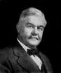

FORMER JUDGES
Judge Willard New
Willard New was born in Vernon, Indiana on December 4, 1862. He
Attended school in Vernon, then Indiana University in Bloomington
Following college, he studied law in the office of his father, Jeptha D.
New , and was admitted to the bar in 1883. He entered into private
practice until the death of his father, who was serving on the Indiana
Appellate Court. Governor Ira Chase appointed him to complete his
Father’s term, and he served on the Appellate Court from August 20
To December 31, 1892. Judge New was later elected Circuit Judge of
the state’s sixth judicial circuit on November 7, 1894, serving two
terms of six years each. Afterward he and his brother, Burt practiced
law together in North Vernon until April 1911, when he moved to
Indianapolis to from the law firm for korbly and New with Bernard
Korbly. Judge New married Laura Steffens of Indianapolis in
November 1911. He died on May 30, 1933, in North Vernon.
Attended school in Vernon, then Indiana University in Bloomington
Following college, he studied law in the office of his father, Jeptha D.
New , and was admitted to the bar in 1883. He entered into private
practice until the death of his father, who was serving on the Indiana
Appellate Court. Governor Ira Chase appointed him to complete his
Father’s term, and he served on the Appellate Court from August 20
To December 31, 1892. Judge New was later elected Circuit Judge of
the state’s sixth judicial circuit on November 7, 1894, serving two
terms of six years each. Afterward he and his brother, Burt practiced
law together in North Vernon until April 1911, when he moved to
Indianapolis to from the law firm for korbly and New with Bernard
Korbly. Judge New married Laura Steffens of Indianapolis in
November 1911. He died on May 30, 1933, in North Vernon.
